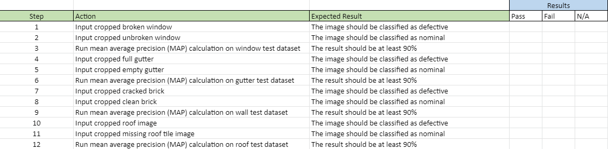

Progress

The above Gantt Chart represents the goals and agenda of the development of our project. The darker sections indicate the “critical path,” which are the core objectives that will lead to the completion of our project. The earlier objectives include completing the machine learning image recognition program and effectively displaying it within the user interface. This way, we can use that raw data to generate commands and move onto the next step, which is to integrate the machine learning algorithm with the drone’s path planning. Simultaneously, we will be assembling the drone with all of its auxiliary systems. When we have completed both of these tasks, we can begin our test flights using the machine learning algorithm, and we can also begin work on the front-end user interface. These final steps will lead to the completion of our project. The flight testing will allow us to tweak and change functionalities before our final product submission; and the graphical user interface will take all of the drone’s functionalities and user input to perform the appropriate tasks.
Progess Update (3/12/21)
As of 3/12/21, in some regards, our team is on-time; in others, we are behind schedule. The drone’s flight protocols and flight testing seem to be completely nominal and functionally finished. Our initial object recognition system, YOLOv4, is relatively on-track; however, about a month ago our client decided to attempt implementing a second level of image classification to determine whether physical features are damaged or intact, which has put us behind schedule. As a result, our integration with the ground control flight software and graphical user interface has been delayed. We are currently attempting to get back on time - if we were to attempt this project from the beginning, our “lesson learned” is that we would have placed more emphasis on getting the first round of object recognition functioning sooner, so that we could allot more time to perfecting the second round of classification. If this was done, we could additionally spend more of our time streamlining the integration with the graphical user interface, which may be slightly more rough as a result.
Testing
The test represented above is one of our planned Unit tests, specifically for the damage severity classification software. This test will evaluate the efficacy of the deep neural networks responsible for identifying whether a physical feature is damaged or nominal. We are using TensorFlow, OpenCV, and the Keras library in Python to accomplish this task. Part of Keras’s functionality allows the user to use a predefined and labeled testing set in order to test the accuracy of a classification network using a measure called the mean average precision, or mAP. This is done by analyzing how many of the pictures are properly labeled by the neural network as well as the network’s confidence assigned to each of these labels. We will use this functionality for each individual class of structural feature (windows, gutters, walls, and roofs) to evaluate how effective the neural networks are, and we will tweak the layers and add more training data if necessary.